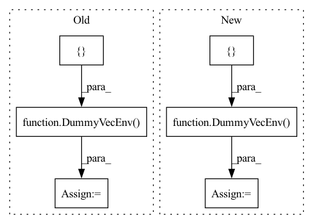

Pattern ID :30974

Before Change
:param model_class: (BaseRLModel) A RL model
env = DummyVecEnv([lambda: IdentityEnvBox(10)])
// create model
model = model_class("MlpPolicy", env, policy_kwargs=dict(net_arch=[16]), verbose=1, create_eval_env=True)
model.learn(total_timesteps=500, eval_freq=250)
env.reset()
observations = np.array([env.step(env.action_space.sample())[0] for _ in range(10)])
observations = observations.reshape(10, -1)
policy = model.policy
policy_class = policy.__class__
After Change
env = FakeImageEnv(screen_height=40, screen_width=40, n_channels=3,
discrete=False)
env = DummyVecEnv([lambda: env])
// create model
model = model_class(policy_str, env, policy_kwargs=dict(net_arch=[16]),
verbose=1, **kwargs)
In pattern: SUPERPATTERN
Frequency: 3
Non-data size: 6
Instances
Fragment ID: 91024248
Project Name: dlr-rm/stable-baselines3
Commit Name: 041f2bc59a67269f7e0397476a6379cd2f5b7ee6
Time: 2020-04-22
Author: antonin.raffin@ensta.org
File Name: tests/test_save_load.py
M Class Name: AnonimousClass
N Class Name: AnonimousClass
M Method Name: test_save_load_policy(2)
N Method Name: test_save_load_policy(1)
M Parent Class:
N Parent Class:
M File Name: tests/test_save_load.py
N File Name: tests/test_save_load.py
M Start Line: 172
M End Line: 180
N Start Line: 168
N End Line: 189
'>
Before Change
env = DummyVecEnv([make_env])
env = VecNormalize(env, norm_obs=True, norm_reward=True, clip_obs=10.0, clip_reward=10.0)
eval_env = DummyVecEnv([make_env])
eval_env = VecNormalize(eval_env, training=False, norm_obs=True, norm_reward=False, clip_obs=10.0, clip_reward=10.0)
model = model_class("MlpPolicy", env, verbose=1, policy_kwargs=dict(net_arch=[64]))
model.learn(total_timesteps=1000, eval_env=eval_env, eval_freq=500)
After Change
@pytest.mark.parametrize("model_class", [SAC, TD3, HER])
def test_offpolicy_normalization(model_class):
make_env_ = make_dict_env if model_class == HER else make_env
env = DummyVecEnv([make_env_])
env = VecNormalize(env, norm_obs=True, norm_reward=True, clip_obs=10.0, clip_reward=10.0)
eval_env = DummyVecEnv([make_env_])
eval_env = VecNormalize(eval_env, training=False, norm_obs=True, norm_reward=False, clip_obs=10.0, clip_reward=10.0)
'>
Fragment ID: 91024249
Project Name: dlr-rm/stable-baselines3
Commit Name: dd6e361204e24932184a4a6b05ce3b91d29671c7
Time: 2020-10-22
Author: megan.klaiber@outlook.com
File Name: tests/test_vec_normalize.py
M Class Name: AnonimousClass
N Class Name: AnonimousClass
M Method Name: test_offpolicy_normalization(1)
N Method Name: test_offpolicy_normalization(1)
M Parent Class:
N Parent Class:
M File Name: tests/test_vec_normalize.py
N File Name: tests/test_vec_normalize.py
M Start Line: 128
M End Line: 131
N Start Line: 221
N End Line: 228
'>
Before Change
env = DummyVecEnv([make_env_])
env = VecNormalize(env, norm_obs=True, norm_reward=True, clip_obs=10.0, clip_reward=10.0)
eval_env = DummyVecEnv([make_env_])
eval_env = VecNormalize(eval_env, training=False, norm_obs=True, norm_reward=False, clip_obs=10.0, clip_reward=10.0)
if model_class == HerReplayBuffer:
model = SAC(
After Change
@pytest.mark.parametrize("model_class", [SAC, TD3])
def test_offpolicy_normalization(model_class):
env = DummyVecEnv([make_env])
env = VecNormalize(env, norm_obs=True, norm_reward=True, clip_obs=10.0, clip_reward=10.0)
eval_env = DummyVecEnv([make_env])
eval_env = VecNormalize(eval_env, training=False, norm_obs=True, norm_reward=False, clip_obs=10.0, clip_reward=10.0)
'>
Fragment ID: 91024244
Project Name: dlr-rm/stable-baselines3
Commit Name: c5adad82b2c1733bd8add7e2eeb49a895b635856
Time: 2023-03-20
Author: 45557362+qgallouedec@users.noreply.github.com
File Name: tests/test_vec_normalize.py
M Class Name: AnonimousClass
N Class Name: AnonimousClass
M Method Name: test_offpolicy_normalization(1)
N Method Name: test_offpolicy_normalization(2)
M Parent Class:
N Parent Class:
M File Name: tests/test_vec_normalize.py
N File Name: tests/test_vec_normalize.py
M Start Line: 343
M End Line: 373
N Start Line: 372
N End Line: 378